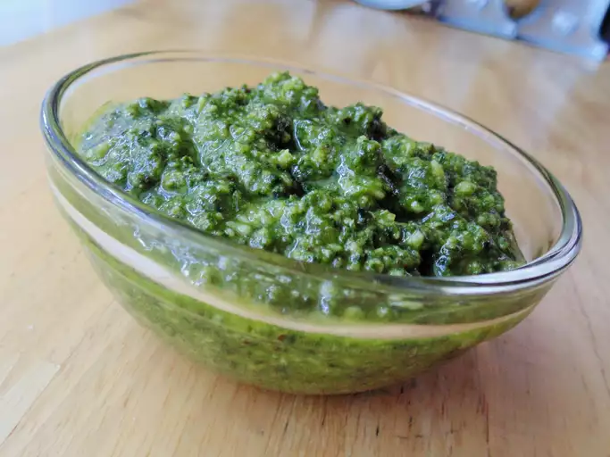

Pesto

Description
Pesto or more fully pesto alla genovese is a paste made of crushed garlic, pine nuts,
salt, basil leaves, grated cheese such as Parmesan or pecorino sardo, and olive oil.
It originated in the Italian city of Genoa, and is used to dress pasta and sometimes
soups.
Ingredients
- 60g Basil
- 2.5g salt
- 30g pine nuts
- zest of half a small lemon
- 10g lemon juice
- 1 snall garlic clove
- 15g parmigiano reggiano
- 54g extra virgin olive oil (EVOO)
- 28g butter
Steps
- add basil, salt, nuts, lemon zest and juice, garlic, parm, butter
and EVOO to a blender and blend until smooth and relatively homogeneous.
- Enjoy on pasta, bread, in marinades and all other kinds of applications.